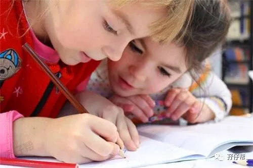
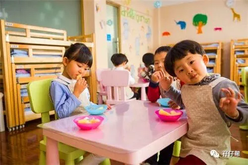
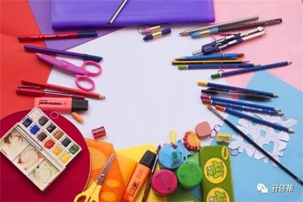

01
这一天，我盼了三年！
嗯！准确地说，是四年吧！算上怀胎9月！
2018年9月3日星期一9月3日，双胞胎圆圈兄弟第一次入园。
跟大多数妈妈一样，我非常担心圆圈兄弟会不会在幼儿园门口“抱大腿”不肯上学。
先来看下在新浪微博上看到的一则视频。
真不敢相信，这种“史诗灾难片”居然会发生在幼儿园开学，瞧瞧最后那一幕：那个平时刀子嘴的爸爸送完孩子之后居然躲在车里大哭…
很庆幸，我今天并没有经历这么悲惨的一幕。
新生入园开学季反而让我幸福骄傲了一整天，因为圆圈兄弟的表现着实让我和圆圈爸被震惊到怀疑人生！
早晨，7点40分，为了表示我们对他们哥俩第一天上学的高度重视，我和圆圈爸盛装出席，一人牵着一个出发了。路上我一直碎碎念地问：“你们会不会哭啊？”
“不会！”圆圈兄弟异口同声地回答我了！
事实上，我的担心确实有点多余，
他们进去幼儿园被老师接应之后就再也没有回头看我和圆圈爸，一个招呼都不打，一点丝丝留恋的意思都没有，好像这是他们经常做的事情一样，信手拈来…
我和圆圈爸，看着他们小小的背影一路蹦蹦跳跳地进入教室，有种“我们很多余”的感觉。
边上一保安大叔忍不住啧啧称赞：“呦呵，你这两个孩子适应能力好强啊！”
我掩嘴大笑，喜极而泣！
回去的路上，看到一个跟圆圈差不多大的小男孩，坐在地上打滚大哭：“妈妈,我要回家！”，而边上站着的妈妈一脸漠然和无奈…
我和圆圈爸对视了一下，纷纷表示深切的同情。
我很难想象，要是圆圈这样撒泼不肯上学。苍天啊，叫我怎么办呐！
谢天谢地谢圆圈兄弟，同时也谢谢自己一直以来在这方面的“未雨绸缪”，让我如此云淡风轻地面对圆圈第一次入园。
不好意思，幸福来得太突然了，请容许我矫情一下！
02
圆圈兄弟的“零压力”入园跟平时我和圆圈爸的教育分不开，我非常庆幸自己在这方面的努力，而今天的验收成果实在太出乎意料了，实践证明自己这三年来的育儿理念是正确的，今天借开学季分享给双胞胎家庭一个生存技巧。
我用一句经典成语概括：舍不得孩子套不住狼。
>>舍得你的时间
一天24小时，你花在孩子身上的时间是多久？坦白地说，我跟圆圈一天相处的时间其实只有短短的两个小时。
其实，并不是陪伴孩子的时间越长越好。
有教育专家研究得出：父母陪伴孩子的时间多少与孩子的成长结果之间没有必然的关联。跟孩子在一起重质量，而不是数量。
因为我和圆圈兄弟在一起的时间短，我总是用一天中最好的状态跟他们互动，讲故事，涂鸦，玩积木…或者什么事都不干，娘三躺床上瞎说，瞎闹…然后睡觉...
据说，妈妈的陪伴时间，是给孩子一个光明未来的关键。我和圆圈兄弟之间良好亲子关系完全得益于这三年来每天累积的两小时。
很难想象留守儿童是有多么缺爱啊！乐清女孩打滴滴遇害就是一个警钟，凶手钟某年幼时就是万千留守儿童中的一个。
>>舍得你的耐心
我们家长似乎都有这样一个通病，喜欢催促孩子。经常说的话就是“快点拉…”“再不快点就不等你了…”
同时，所有家长都清楚，我们必须对孩子耐心点，但却很难说到做到。
圆圈洗完澡喜欢不穿衣服就在床上打滚，我知道他们喜欢这种零距离接触的感觉，尤其是抱着毛绒绒的被子，更加爱不释手。
圆圈爸经常催我快点给他们穿衣服，怕着凉。
可我并不着急，反而饶有兴味地观看他们的“全裸秀”，差不多3分钟左右，就用眼神示意他们是时候穿衣服了，并用睡前奶诱惑他们。圆圈兄弟总能GET 到我的眼神，心甘情愿地过来穿衣服。
其实，我刚开始跟大多数家长一样会不断催促他们快点穿衣服，我知道他们最终会在我的威逼利诱下妥协，但结果就是因内心的不甘而赌气不肯睡觉或者在心理仇视着我…
须知道，家长觉得屁点大的事在孩子的眼里却是至高无上的“国家大事”。
因此，还是多一点耐心，包容孩子内心的小心思。尤其是对待三岁的小屁孩，你尊重他们，他们会加倍尊重你！
>>舍得你的诚信
“等下给你看电视…”“晚点再给你吃棒棒糖…”不管是有意还是无意，我们经常会随口就给孩子做出这样那样的承诺。
可是，却很少真正实现过。
熟悉我的人，都清楚圆圈妈向来是“一言既出驷马难追”。这个诚信原则一直是我引以为傲的品格之一。
对待我的儿子们，亦如此。
举个例子，我给圆圈喂药：“来！喝下！这是药，会有点苦或者很苦！但吃进去了，感冒就好 起来！”当然，回应我的自然是是一阵鬼哭狼嚎，四处乱窜。
圆圈婆婆怪我太直接，建议我说是糖水，甜甜的！
三岁多的小孩子已不再是襁褓中任由你摆布的小婴儿，他们现阶段察言观色的能力是一流的，是先天天赋之一！
想骗他们？--没门！
况且，我真的不会说谎！还是讲真话自然点！
这只是我对待圆圈在诚信方面的一个例子，我想说的是，我从未在圆圈兄弟面前“怂”过！
不骗他们！答应的事情一定做到！拒绝糊弄！当我真的做到了，我会要求他们给我表扬。
圆圈兄弟穷尽洪荒之力，对我这个妈设下多次的考验之后，终于把我列入他们的 “诚信的人”白名单！
因此，当我跟他们说：妈妈和爸爸中午会来接你们！”他们相信了，完全放心地跟着老师进去幼儿园，因为他们清楚“他们的娘亲是个说话算话的人”，笃定我一定会去接他们！
>>最后，舍得你的孩子
我看见有些妈妈送孩子入园的时候，看见孩子哭也跟着大哭，一副生死离别的状态，
不明就里的孩子看见妈妈哭成那样，自然是哭得变本加厉了。
“妈妈舍不得孩子，孩子舍不得妈妈”这种亲子关系，非常不值得提倡，也不应该时常挂在嘴边。
此时此刻，不管是多少次的亲亲抱抱都没有用了，长此以来的“舍不得”突然间大转变，这让情商还在发育中的小孩子如何接受的呢？
因此，千万不要孩子哭，妈妈也哭，最后全都抱头痛哭！
请你蹲下来，抱抱孩子，看着他的眼睛，抛开那份担心和不舍，从容淡定地告诉孩子：“加油，妈妈等你放学后来接你…”
哎！我知道我这都是“心里鸡汤”！没有良好亲子关系的铺垫，所有语言都是苍白无力的。
罢了！说多无益了，只能等孩子慢慢适应了。
03
孖仔帮喂养群那些升级卸货的的宝妈，圆圈妈要敲黑板了。若不想三年后娘三哭成一团，现在马上立刻培养你跟两小孩之间的亲子关系。
从现在开始就用温柔坚定的眼神告诉你们的双胞胎孩子：“去吧！别怕！你们的妈一直都在！”
舍得孩子，才有机会套住狼！
当然，我们的目的并不是狼这样的大目标，而是一个为人父母再平常不过的初衷而已：希望孩子第一次入园能一切顺利，尽早适应集体生活。
除了在入园前帮助孩子做一些基本准备，还要在孩子牙牙学语地时候就有意识地跟孩子建立良好的亲子关系，这将影响到孩子的一生！
等他们长大成人之后，一定会感谢你当初看似冷酷无情的“舍得”，实则爱意满满的“舍得”
番外篇
讲真，圆圈妈到底哭了没？
6月30日那天，开新生家长会，园长老师说，家长只需要把孩子送到幼儿园门口就止步。
我看着园长老师拿着荧光笔指着“家长止步区域”时，居然瞬间泪奔！
我的圆圈，妈妈只能送你们到这了！其他的，你们看着办吧！
今天，其实在接送圆圈时，我也有点鼻头发酸…尤其是他们在一楼门口排队等候家长接送的时候，我看到圆圈在东张西望，好像在找我和圆圈爸。
还好，我和圆圈爸都信守诺言，早早就在幼儿园门口等候。
他们看到我们时，一点都不意外，笑嘻嘻地扑到我们的怀里。
那一刻，我的眼泪扑簌簌地流…
谢谢你们长大了！
1
END
1
本文系圆圈妈V-新sgguy-com原创，来源于孖仔帮，专注双胞胎孕期育儿经验分享，著作权归孖仔帮所有。
各位双胎妈妈，更多孖仔帮原创育儿文章请猛戳 "阅读原文" ，或者直接上圆圈妈的个人博客，大把双胎孕期育儿心得经验分享。
阅读原文：
https://www.sgguy.com/twinsbang


